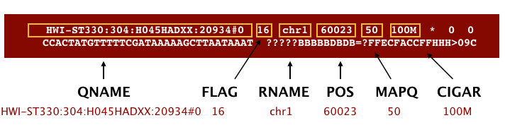
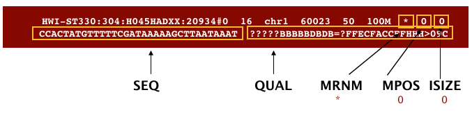
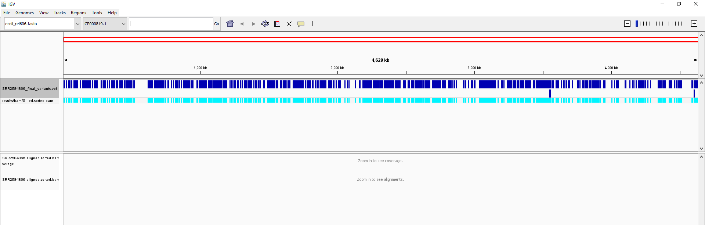

Variant Calling Workflow
 Sofoklis Keisaris
Sofoklis Keisaris
 Fotis E. Psomopoulos
Fotis E. Psomopoulos
 Saskia Hiltemann
Saskia Hiltemann
 Helena Rasche
Helena Rasche
 The Carpentries
hall-of-fameAdd Contributions!
The Carpentries
hall-of-fameAdd Contributions!
Overview
Questions:Objectives:
How do I find sequence variants between my sample and a reference genome?
Requirements:
Understand the steps involved in variant calling.
Describe the types of data formats encountered during variant calling.
Use command line tools to perform variant calling.
- Introduction to Galaxy Analyses
- Sequence analysis
- Quality Control: slides slides - tutorial hands-on
- Mapping: slides slides - tutorial hands-on
Time estimation: 50 minSupporting Materials:Last modification: May 18, 2022
 Questions:
Questions:
Introduction
comment Comment
This tutorial is significantly based on the Carpentries “Data Wrangling and Processing for Genomics” lesson
In this tutorial we are working with files from a long-term evolution study of an E. coli population (designated Ara-3). We will perform variant calling to see how the population changed over time. We care how this population changed relative to the original population, E. coli strain REL606. Therefore, we will align each of our samples to the E. coli REL606 reference genome, and see what differences exist in our reads versus the genome.
The whole proccess is designed to be run in RStudio ,as an Active Interactive Tool, directly in Galaxy.
hands_on Installing software
First, we need to get our hands on RStudio.
tip Tip: Launch RStudio in Galaxy
Currently RStudio in Galaxy is only available on UseGalaxy.eu and UseGalaxy.org
- Open the Rstudio tool tool by clicking here
- Click Execute
- The tool will start running and will stay running permanently
- Click on the “User” menu at the top and go to “Active InteractiveTools” and locate the RStudio instance you started.
tip Tip: Launch RStudio Cloud if not available on Galaxy
If RStudio is not available on the Galaxy instance:
- Register for RStudio Cloud, or login if you already have an account
- Create a new project
The R Console and other interactive tools like RStudio are great for prototyping code and exploring data, but sooner or later we will want to use our program in a pipeline or run it in a shell script to process thousands of data files. This is one of those cases and, in order to do that, we will use the terminal provided by the RStudio itself. We go to “Tools” and pick the “Shell…” option and we are good to go. Our workspace is the left, terminal window that just opened.
Fortunately, miniconda is already installed. Miniconda is a package manager that simplifies the installation processes. We can and will use it to install every essential package for our tutorial. However, it is of critical importance that we do that in an new environment within our existing base and install our packages in said environment.
code-in Environment and Packages
$ conda create -n name_of_your_env bwa samtools bcftools $ conda activate name_of_your_env
| Software | Version | Manual | Available for | Description |
|---|---|---|---|---|
| BWA | 0.7.17 | Link | Linux, MacOS | Mapping DNA sequences against reference genome. |
| SAMtools | 1.15.1 | Link | Linux, MacOS | Utilities for manipulating alignments in the SAM format. |
| BCFtools | 1.15.1 | Link | Linux, MacOS | Utilities for variant calling and manipulating VCFs and BCFs. |
| IGV | Link | Link | Linux, MacOS, Windows | Visualization and interactive exploration of large genomics datasets. |
Alignment to a reference genome

We perform read alignment or mappinγ to determine where in the genome our reads originated from. There are a number of tools to choose from and, while there is no gold standard, there are some tools that are better suited for particular NGS analyses. We will be using the Burrows Wheeler Aligner (BWA), which is a software package for mapping low-divergent sequences against a large reference genome.
The alignment process consists of two steps:
- Indexing the reference genome
- Aligning the reads to the reference genome
Setting up
hands_on Download Genome
First we download the reference genome for E. coli REL606. Although we could copy or move the file with
cpormv, most genomics workflows begin with a download step, so we will practice that here.code-in Input: Bash
$ mkdir ~/galaxy_tutorial $ cd ~/galaxy_tutorial $ mkdir -p data/ref_genome $ curl -L -o data/ref_genome/ecoli_rel606.fasta.gz ftp://ftp.ncbi.nlm.nih.gov/genomes/all/GCA/000/017/985/GCA_000017985.1_ASM1798v1/GCA_000017985.1_ASM1798v1_genomic.fna.gz $ gunzip data/ref_genome/ecoli_rel606.fasta.gzquestion Question
We saved this file as
data/ref_genome/ecoli_rel606.fasta.gzand then decompressed it. What is the real name of the genome?solution Solution
$ head data/ref_genome/ecoli_rel606.fastaThe name of the sequence follows the
>character. The name isCP000819.1 Escherichia coli B str. REL606, complete genome. Keep this chromosome name (CP000819.1) in mind, as we will use it later in the lesson.We will also download a set of trimmed FASTQ files to work with that will enable us to run our variant calling workflow quite quickly.
$ curl -L -o sub.tar.gz https://ndownloader.figshare.com/files/14418248 $ tar xvf sub.tar.gz $ mv sub/ ~/galaxy_tutorial/data/trimmed_fastq_smallYou will also need to create directories for the results that will be generated as part of this workflow. We can do this in a single line of code, because
mkdircan accept multiple new directory names as input.$ mkdir -p results/sam results/bam results/bcf results/vcf
hands_on Index the reference genome
Our first step is to index the reference genome for use by BWA. Indexing allows the aligner to quickly find potential alignment sites for query sequences in a genome, which saves time during alignment. Indexing the reference only has to be run once. The only reason you would want to create a new index is if you are working with a different reference genome or you are using a different tool for alignment.
$ bwa index data/ref_genome/ecoli_rel606.fastacode-out Output
While the index is created, you will see output that looks something like this:
[bwa_index] Pack FASTA... 0.04 sec [bwa_index] Construct BWT for the packed sequence... [bwa_index] 1.05 seconds elapse. [bwa_index] Update BWT... 0.03 sec [bwa_index] Pack forward-only FASTA... 0.02 sec [bwa_index] Construct SA from BWT and Occ... 0.57 sec [main] Version: 0.7.17-r1188 [main] CMD: bwa index data/ref_genome/ecoli_rel606.fasta [main] Real time: 1.765 sec; CPU: 1.715 sec
hands_on Align reads to reference genome
The alignment process consists of choosing an appropriate reference genome to map our reads against and then deciding on an aligner. We will use the BWA-MEM algorithm, which is the latest and is generally recommended for high-quality queries as it is faster and more accurate.
An example of what a
bwacommand looks like is below. This command will not run, as we do not have the filesref_genome.fa,input_file_R1.fastq, orinput_file_R2.fastq.$ bwa mem ref_genome.fasta input_file_R1.fastq input_file_R2.fastq > output.samHave a look at the bwa options page. While we are running bwa with the default parameters here, your use case might require a change of parameters. NOTE: Always read the manual page for any tool before using and make sure the options you use are appropriate for your data.
We are going to start by aligning the reads from just one of the samples in our dataset (
SRR2584866). Later, we will be iterating this whole process on all of our sample files.code-in Align with bwa
$ bwa mem data/ref_genome/ecoli_rel606.fasta data/trimmed_fastq_small/SRR2584866_1.trim.sub.fastq data/trimmed_fastq_small/SRR2584866_2.trim.sub.fastq > results/sam/SRR2584866.aligned.sam{: .icon code-out} Output:
[M::bwa_idx_load_from_disk] read 0 ALT contigs [M::process] read 77446 sequences (10000033 bp)... [M::process] read 77296 sequences (10000182 bp)... [M::mem_pestat] # candidate unique pairs for (FF, FR, RF, RR): (48, 36728, 21, 61) [M::mem_pestat] analyzing insert size distribution for orientation FF... [M::mem_pestat] (25, 50, 75) percentile: (420, 660, 1774) [M::mem_pestat] low and high boundaries for computing mean and std.dev: (1, 4482) [M::mem_pestat] mean and std.dev: (784.68, 700.87) [M::mem_pestat] low and high boundaries for proper pairs: (1, 5836) [M::mem_pestat] analyzing insert size distribution for orientation FR...
hands_on SAM/BAM format
The SAM file, is a tab-delimited text file that contains information for each individual read and its alignment to the genome. While we do not have time to go into detail about the features of the SAM format, the paper by Heng Li et al. provides a lot more detail on the specification.
The compressed binary version of SAM is called a BAM file. We use this version to reduce size and to allow for indexing, which enables efficient random access of the data contained within the file.
The file begins with a header, which is optional. The header is used to describe the source of data, reference sequence, method of alignment, etc., this will change depending on the aligner being used. Following the header is the alignment section. Each line that follows corresponds to alignment information for a single read. Each alignment line has 11 mandatory fields for essential mapping information and a variable number of other fields for aligner specific information. An example entry from a SAM file is displayed below with the different fields highlighted.


code-in SAM to BAM
We will convert the SAM file to BAM format using the
samtoolsprogram with theviewcommand and tell this command that the input is in SAM format (-S) and to output BAM format (-b):$ samtools view -S -b results/sam/SRR2584866.aligned.sam > results/bam/SRR2584866.aligned.bamcode-out Output
[samopen] SAM header is present: 1 sequences.
hands_on Sort BAM file by coordinates
Next we sort the BAM file using the
sortcommand fromsamtools.-otells the command where to write the output.code-in
sortcommand$ samtools sort -o results/bam/SRR2584866.aligned.sorted.bam results/bam/SRR2584866.aligned.bamcode-out Output
Our files are pretty small, so we will not see this output. If you run the workflow with larger files, you will see something like this:
[bam_sort_core] merging from 2 files...SAM/BAM files can be sorted in multiple ways, e.g. by location of alignment on the chromosome, by read name, etc. It is important to be aware that different alignment tools will output differently sorted SAM/BAM, and different downstream tools require differently sorted alignment files as input.
You can use samtools to learn more about this bam file as well.
samtools flagstat results/bam/SRR2584866.aligned.sorted.bamThis will give you the following statistics about your sorted bam file:
351169 + 0 in total (QC-passed reads + QC-failed reads) 0 + 0 secondary 1169 + 0 supplementary 0 + 0 duplicates 351103 + 0 mapped (99.98% : N/A) 350000 + 0 paired in sequencing 175000 + 0 read1 175000 + 0 read2 346688 + 0 properly paired (99.05% : N/A) 349876 + 0 with itself and mate mapped 58 + 0 singletons (0.02% : N/A) 0 + 0 with mate mapped to a different chr 0 + 0 with mate mapped to a different chr (mapQ>=5)
Variant calling
A variant call is a conclusion that there is a nucleotide difference vs. some reference at a given position in an individual genome
or transcriptome, often referred to as a Single Nucleotide Variant (SNV). The call is usually accompanied by an estimate of
variant frequency and some measure of confidence. Similar to other steps in this workflow, there are a number of tools available for
variant calling. In this workshop we will be using bcftools, but there are a few things we need to do before actually calling the
variants.

hands_on Step 1: Calculate the read coverage of positions in the genome
Do the first pass on variant calling by counting read coverage with bcftools. We will use the command
mpileup. The flag-O btells bcftools to generate a bcf format output file,-ospecifies where to write the output file, and-fflags the path to the reference genome:code-in
mpileupcommand$ bcftools mpileup -O b -o results/bcf/SRR2584866_raw.bcf -f data/ref_genome/ecoli_rel606.fasta results/bam/SRR2584866.aligned.sorted.bamcode-out Output
[mpileup] 1 samples in 1 input filesWe have now generated a file with coverage information for every base.
hands_on Step 2: Detect the single nucleotide variants (SNVs)
Identify SNVs using bcftools
call. We have to specify ploidy with the flag--ploidy, which is one for the haploid E. coli.-mallows for multiallelic and rare-variant calling,-vtells the program to output variant sites only (not every site in the genome), and-ospecifies where to write the output file:code-in
callcommand$ bcftools call --ploidy 1 -m -v -o results/vcf/SRR2584866_variants.vcf results/bcf/SRR2584866_raw.bcf
hands_on Step 3: Filter and report the SNV variants in variant calling format (VCF)
Filter the SNVs for the final output in VCF format, using
vcfutils.pl:code-in Filtering with
vcfutils.plcommand$ vcfutils.pl varFilter results/vcf/SRR2584866_variants.vcf > results/vcf/SRR2584866_final_variants.vcf
hands_on Explore the VCF format:
code-in
$ less -S results/vcf/SRR2584866_final_variants.vcf
You will see the header (which describes the format), the time and date the file was created, the version of bcftools that was used, the command line parameters used, and some additional information:
code-out Output
##fileformat=VCFv4.2 ##FILTER=<ID=PASS,Description="All filters passed"> ##bcftoolsVersion=1.8+htslib-1.8 ##bcftoolsCommand=mpileup -O b -o results/bcf/SRR2584866_raw.bcf -f data/ref_genome/ecoli_rel606.fasta results/bam/SRR2584866.aligned.sorted.bam ##reference=file://data/ref_genome/ecoli_rel606.fasta ##contig=<ID=CP000819.1,length=4629812> ##ALT=<ID=*,Description="Represents allele(s) other than observed."> ##INFO=<ID=INDEL,Number=0,Type=Flag,Description="Indicates that the variant is an INDEL."> ##INFO=<ID=IDV,Number=1,Type=Integer,Description="Maximum number of reads supporting an indel"> ##INFO=<ID=IMF,Number=1,Type=Float,Description="Maximum fraction of reads supporting an indel"> ##INFO=<ID=DP,Number=1,Type=Integer,Description="Raw read depth"> ##INFO=<ID=VDB,Number=1,Type=Float,Description="Variant Distance Bias for filtering splice-site artefacts in RNA-seq data (bigger is better)",Version= ##INFO=<ID=RPB,Number=1,Type=Float,Description="Mann-Whitney U test of Read Position Bias (bigger is better)"> ##INFO=<ID=MQB,Number=1,Type=Float,Description="Mann-Whitney U test of Mapping Quality Bias (bigger is better)"> ##INFO=<ID=BQB,Number=1,Type=Float,Description="Mann-Whitney U test of Base Quality Bias (bigger is better)"> ##INFO=<ID=MQSB,Number=1,Type=Float,Description="Mann-Whitney U test of Mapping Quality vs Strand Bias (bigger is better)"> ##INFO=<ID=SGB,Number=1,Type=Float,Description="Segregation based metric."> ##INFO=<ID=MQ0F,Number=1,Type=Float,Description="Fraction of MQ0 reads (smaller is better)"> ##FORMAT=<ID=PL,Number=G,Type=Integer,Description="List of Phred-scaled genotype likelihoods"> ##FORMAT=<ID=GT,Number=1,Type=String,Description="Genotype"> ##INFO=<ID=ICB,Number=1,Type=Float,Description="Inbreeding Coefficient Binomial test (bigger is better)"> ##INFO=<ID=HOB,Number=1,Type=Float,Description="Bias in the number of HOMs number (smaller is better)"> ##INFO=<ID=AC,Number=A,Type=Integer,Description="Allele count in genotypes for each ALT allele, in the same order as listed"> ##INFO=<ID=AN,Number=1,Type=Integer,Description="Total number of alleles in called genotypes"> ##INFO=<ID=DP4,Number=4,Type=Integer,Description="Number of high-quality ref-forward , ref-reverse, alt-forward and alt-reverse bases"> ##INFO=<ID=MQ,Number=1,Type=Integer,Description="Average mapping quality"> ##bcftools_callVersion=1.8+htslib-1.8 ##bcftools_callCommand=call --ploidy 1 -m -v -o results/bcf/SRR2584866_variants.vcf results/bcf/SRR2584866_raw.bcf; Date=Tue Oct 9 18:48:10 2018
Followed by information on each of the variations observed:
#CHROM POS ID REF ALT QUAL FILTER INFO FORMAT results/bam/SRR2584866.aligned.sorted.bam CP000819.1 1521 . C T 207 . DP=9;VDB=0.993024;SGB=-0.662043;MQSB=0.974597;MQ0F=0;AC=1;AN=1;DP4=0,0,4,5;MQ=60 CP000819.1 1612 . A G 225 . DP=13;VDB=0.52194;SGB=-0.676189;MQSB=0.950952;MQ0F=0;AC=1;AN=1;DP4=0,0,6,5;MQ=60 CP000819.1 9092 . A G 225 . DP=14;VDB=0.717543;SGB=-0.670168;MQSB=0.916482;MQ0F=0;AC=1;AN=1;DP4=0,0,7,3;MQ=60 CP000819.1 9972 . T G 214 . DP=10;VDB=0.022095;SGB=-0.670168;MQSB=1;MQ0F=0;AC=1;AN=1;DP4=0,0,2,8;MQ=60 GT:PL CP000819.1 10563 . G A 225 . DP=11;VDB=0.958658;SGB=-0.670168;MQSB=0.952347;MQ0F=0;AC=1;AN=1;DP4=0,0,5,5;MQ=60 CP000819.1 22257 . C T 127 . DP=5;VDB=0.0765947;SGB=-0.590765;MQSB=1;MQ0F=0;AC=1;AN=1;DP4=0,0,2,3;MQ=60 GT:PL CP000819.1 38971 . A G 225 . DP=14;VDB=0.872139;SGB=-0.680642;MQSB=1;MQ0F=0;AC=1;AN=1;DP4=0,0,4,8;MQ=60 GT:PL CP000819.1 42306 . A G 225 . DP=15;VDB=0.969686;SGB=-0.686358;MQSB=1;MQ0F=0;AC=1;AN=1;DP4=0,0,5,9;MQ=60 GT:PL CP000819.1 45277 . A G 225 . DP=15;VDB=0.470998;SGB=-0.680642;MQSB=0.95494;MQ0F=0;AC=1;AN=1;DP4=0,0,7,5;MQ=60 CP000819.1 56613 . C G 183 . DP=12;VDB=0.879703;SGB=-0.676189;MQSB=1;MQ0F=0;AC=1;AN=1;DP4=0,0,8,3;MQ=60 GT:PL CP000819.1 62118 . A G 225 . DP=19;VDB=0.414981;SGB=-0.691153;MQSB=0.906029;MQ0F=0;AC=1;AN=1;DP4=0,0,8,10;MQ=59 CP000819.1 64042 . G A 225 . DP=18;VDB=0.451328;SGB=-0.689466;MQSB=1;MQ0F=0;AC=1;AN=1;DP4=0,0,7,9;MQ=60 GT:PL
This is a lot of information, so let’s take some time to make sure we understand our output.
The first few columns represent the information we have about a predicted variation.
| column | info |
|---|---|
| CHROM | contig location where the variation occurs |
| POS | position within the contig where the variation occurs |
| ID | a . until we add annotation information |
| REF | reference genotype (forward strand) |
| ALT | sample genotype (forward strand) |
| QUAL | Phred-scaled probability that the observed variant exists at this site (higher is better) |
| FILTER | a . if no quality filters have been applied, PASS if a filter is passed, or the name of the filters this variant failed |
In an ideal world, the information in the QUAL column would be all we needed to filter out bad variant calls.
However, in reality we need to filter on multiple other metrics.
The last two columns contain the genotypes and can be tricky to decode.
| column | info |
|---|---|
| FORMAT | lists in order the metrics presented in the final column |
| results | lists the values associated with those metrics in order |
For our file, the metrics presented are GT:PL:GQ.
| metric | definition |
|---|---|
| AD, DP | the depth per allele by sample and coverage |
| GT | the genotype for the sample at this loci. For a diploid organism, the GT field indicates the two alleles carried by the sample, encoded by a 0 for the REF allele, 1 for the first ALT allele, 2 for the second ALT allele, etc. A 0/0 means homozygous reference, 0/1 is heterozygous, and 1/1 is homozygous for the alternate allele. |
| PL | the likelihoods of the given genotypes |
| GQ | the Phred-scaled confidence for the genotype |
The Broad Institute’s VCF guide is an excellent place to learn more about the VCF file format.
question Question
Use the
grepandwccommands you have learned to assess how many variants are in the vcf file.solution Solution
code-in
$ grep -v "#" results/vcf/SRR2584866_final_variants.vcf | wc -lcode-out
766There are 766 variants in this file.
hands_on Assess the alignment (visualization) - optional step
It is often instructive to look at your data in a genome browser. Visualization will allow you to get a “feel” for the data, as well as detecting abnormalities and problems. Also, exploring the data in such a way may give you ideas for further analyses. As such, visualization tools are useful for exploratory analysis. In this lesson we will describe two different tools for visualization: a light-weight command-line based one and the Broad Institute’s Integrative Genomics Viewer (IGV) which requires software installation and transfer of files.
code-in In order for us to visualize the alignment files, we will need to index the BAM file using
samtools:$ samtools index results/bam/SRR2584866.aligned.sorted.bam
Viewing with tview
Samtools implements a very simple text alignment viewer based on the GNU
ncurses library, called tview. This alignment viewer works with short indels and shows MAQ consensus.
It uses different colors to display mapping quality or base quality, subjected to users’ choice. Samtools viewer is known to work with a 130 GB alignment swiftly. Due to its text interface, displaying alignments over network is also very fast.
In order to visualize our mapped reads, we use tview, giving it the sorted bam file and the reference file:
code-in Visualize with tview
$ samtools tview results/bam/SRR2584866.aligned.sorted.bam data/ref_genome/ecoli_rel606.fasta
code-out Output
1 11 21 31 41 51 61 71 81 91 101 111 121
AGCTTTTCATTCTGACTGCAACGGGCAATATGTCTCTGTGTGGATTAAAAAAAGAGTGTCTGATAGCAGCTTCTGAACTGGTTACCTGCCGTGAGTAAATTAAAATTTTATTGACTTAGGTCACTAAATAC
..................................................................................................................................
,,,,,,,,,,,,,,,,,,,,,,,,,,,,,,,,,,,, ..................N................. ,,,,,,,,,,,,,,,,,,,,,,,,,,,,,,,,........................
,,,,,,,,,,,,,,,,,,,,,,,,,,,,,,,,,,, ..................N................. ,,,,,,,,,,,,,,,,,,,,,,,,,,,.............................
...................................,g,,,,,,,,,,,,,,,,,,,,,,,,,,,,,,,,, .................................... ................
,,,,,,,,,,,,,,,,,,,,,,,,,,,,,,,,,,,.................................... .................................... ,,,,,,,,,,
,,,,,,,,,,,,,,,,,,,,,,,,,,,,,,,,,,,, .................................... ,,a,,,,,,,,,,,,,,,,,,,,,,,,,,,,, .......
,,,,,,,,,,,,,,,,,,,,,,,,,,,,,,, ............................. ,,,,,,,,,,,,,,,,,g,,,,, ,,,,,,,,,,,,,,,,,,,,,,,,,,,,
,,,,,,,,,,,,,,,,,,,,,,,,,,,,,,,,,,, ...........................T....... ,,,,,,,,,,,,,,,,,,,,,,,c, ......
......................... ................................ ,g,,,,,,,,,,,,,,,,,,, ...........................
,,,,,,,,,,,,,,,,,,,,, ,,,,,,,,,,,,,,,,,,,,,,,,,,,,,,, ,,,,,,,,,,,,,,,,,,,,,,,,,,, ..........................
,,,,,,,,,,,,,,,,,,,,,,,,,,,,,,,,,,, ................................T.. .............................. ,,,,,,
........................... ,,,,,,g,,,,,,,,,,,,,,,,, .................................... ,,,,,,
,,,,,,,,,,,,,,,,,,,,,,,,,, .................................... ................................... ....
.................................... ........................ ,,,,,,,,,,,,,,,,,,,,,,,,,,,,,,,,,,,, ....
,,,,,,,,,,,,,,,,,,,,,,,,,,,,,,,,,,,, ,,,,,,,,,,,,,,,,,,,,,,,,,,,,,,,,,,,, ,,,,,,,,,,,,,,,,,,,,,,,,,,,,,,,,,
........................ .................................. ............................. ....
,,,,,,,,,,,,,,,,,,,,,,,,,,,,,,,,,,,, .................................... ..........................
............................... ,,,,,,,,,,,,,,,,,,,,,,,,,,,,,,,, ....................................
................................... ,,,,,,,,,,,,,,,,,,,,,,,,,,,,,,,, ,,,,,,,,,,,,,,,,,,,,,,,,,,,,,,,,,,,
,,,,,,,,,,,,,,,,,,,,,,,,,,,,,,,,,,,, ,,,,,,,,,,,,,,,,,,,,,,,,,,,,,,,,,, ..................................
.................................... ,,,,,,,,,,,,,,,,,,a,,,,,,,,,,,,,,,,, ,,,,,,,,,,,,,,,,,,,,,,,,,
,,,,,,,,,,,,,,,,,,,,,,,,,,,,,,,,,,, ............................ ,,,,,,,,,,,,,,,,,,,,,,,,,,,,,,,,,,,,
The first line of output shows the genome coordinates in our reference genome. The second line shows the reference
genome sequence. The third line shows the consensus sequence determined from the sequence reads. A . indicates
a match to the reference sequence, so we can see that the consensus from our sample matches the reference in most
locations. That is good! If that was not the case, we should probably reconsider our choice of reference.
Below the horizontal line, we can see all of the reads in our sample aligned with the reference genome. Only
positions where the called base differs from the reference are shown. You can use the arrow keys on your keyboard
to scroll or type ? for a help menu. To navigate to a specific position, type g. A dialogue box will appear. In
this box, type the name of the “chromosome” followed by a colon and the position of the variant you would like to view
(e.g. for this sample, type CP000819.1:50 to view the 50th base. Type Ctrl^C or q to exit tview.
question Question
Visualize the alignment of the reads for our
SRR2584866sample. What variant is present at position 4377265? What is the canonical nucleotide in that position?solution Solution
$ samtools tview ~/dc_workshop/results/bam/SRR2584866.aligned.sorted.bam ~/dc_workshop/data/ref_genome/ecoli_rel606.fastaThen type
g. In the dialogue box, typeCP000819.1:4377265.Gis the variant.Ais canonical. This variant possibly changes the phenotype of this sample to hypermutable. It occurs in the gene mutL, which controls DNA mismatch repair.
Viewing with IGV
IGV is a stand-alone browser, which has the advantage of being installed locally and providing fast access. Web-based genome browsers, like Ensembl or the UCSC browser, are slower, but provide more functionality. They not only allow for more polished and flexible visualization, but also provide easy access to a wealth of annotations and external data sources. This makes it straightforward to relate your data with information about repeat regions, known genes, epigenetic features or areas of cross-species conservation, to name just a few.
In order to use IGV, we will need to export some files to our local machine. We know how to do this through RStudio’s UI. We are going to use the down-right panel of RStudio which presents our files. We are going to need these four files:
~/dc_workshop/results/bam/SRR2584866.aligned.sorted.bam ~/dc_workshop/results/bam/SRR2584866.aligned.sorted.bam.bai ~/dc_workshop/data/ref_genome/ecoli_rel606.fasta ~/dc_workshop/results/vcf/SRR2584866_final_variants.vcf
After finding them, we check the boxes left to there name. Then, after clicking the gear icon on the same panel, we choose the option “Export” and confirm it. Now our files should have been downloaded locally.
Next, we need to open the IGV software. If you have not done so already, you can download IGV from the Broad Institute’s software page, double-click the .zip file
to unzip it, and then drag the program into your Applications folder.
- Open IGV.
- Load our reference genome file (
ecoli_rel606.fasta) into IGV using the “Load Genomes from File…“ option under the “Genomes” pull-down menu. - Load our BAM file (
SRR2584866.aligned.sorted.bam) using the “Load from File…“ option under the “File” pull-down menu. - Do the same with our VCF file (
SRR2584866_final_variants.vcf).
Your IGV browser should look like the screenshot below:

There should be two tracks: one coresponding to our BAM file and the other for our VCF file.
In the VCF track, each bar across the top of the plot shows the allele fraction for a single locus. The second bar shows the genotypes for each locus in each sample. We only have one sample called here, so we only see a single line. Dark blue = heterozygous, Cyan = homozygous variant, Grey = reference. Filtered entries are transparent.
Zoom in to inspect variants you see in your filtered VCF file to become more familiar with IGV. See how quality information corresponds to alignment information at those loci. Use this website and the links therein to understand how IGV colors the alignments.
BWA alignment options
BWA consists of three algorithms: BWA-backtrack, BWA-SW and BWA-MEM. The first algorithm is designed for Illumina sequence reads up to 100bp, while the other two are for sequences ranging from 70bp to 1Mbp. BWA-MEM and BWA-SW share similar features such as long-read support and split alignment, but BWA-MEM, which is the latest, is generally recommended for high-quality queries as it is faster and more accurate.
Key points
Bioinformatic command line tools are collections of commands that can be used to carry out bioinformatic analyses.
To use most powerful bioinformatic tools, you will need to use the command line.
There are many different file formats for storing genomics data. It is important to understand what type of information is contained in each file, and how it was derived.
Frequently Asked Questions
Have questions about this tutorial? Check out the FAQ page for the Variant Analysis topic to see if your question is listed there. If not, please ask your question on the GTN Gitter Channel or the Galaxy Help ForumUseful literature
Further information, including links to documentation and original publications, regarding the tools, analysis techniques and the interpretation of results described in this tutorial can be found here.
Feedback
Did you use this material as an instructor? Feel free to give us feedback on how it went.
Did you use this material as a learner or student? Click the form below to leave feedback.

Citing this Tutorial
- Sofoklis Keisaris, Fotis E. Psomopoulos, Saskia Hiltemann, Helena Rasche, The Carpentries, 2022 Variant Calling Workflow (Galaxy Training Materials). https://training.galaxyproject.org/training-material/topics/variant-analysis/tutorials/variant-calling/tutorial.html Online; accessed TODAY
- Batut et al., 2018 Community-Driven Data Analysis Training for Biology Cell Systems 10.1016/j.cels.2018.05.012
details BibTeX
@misc{variant-analysis-variant-calling, author = "Sofoklis Keisaris and Fotis E. Psomopoulos and Saskia Hiltemann and Helena Rasche and The Carpentries", title = "Variant Calling Workflow (Galaxy Training Materials)", year = "2022", month = "05", day = "18" url = "\url{https://training.galaxyproject.org/training-material/topics/variant-analysis/tutorials/variant-calling/tutorial.html}", note = "[Online; accessed TODAY]" } @article{Batut_2018, doi = {10.1016/j.cels.2018.05.012}, url = {https://doi.org/10.1016%2Fj.cels.2018.05.012}, year = 2018, month = {jun}, publisher = {Elsevier {BV}}, volume = {6}, number = {6}, pages = {752--758.e1}, author = {B{\'{e}}r{\'{e}}nice Batut and Saskia Hiltemann and Andrea Bagnacani and Dannon Baker and Vivek Bhardwaj and Clemens Blank and Anthony Bretaudeau and Loraine Brillet-Gu{\'{e}}guen and Martin {\v{C}}ech and John Chilton and Dave Clements and Olivia Doppelt-Azeroual and Anika Erxleben and Mallory Ann Freeberg and Simon Gladman and Youri Hoogstrate and Hans-Rudolf Hotz and Torsten Houwaart and Pratik Jagtap and Delphine Larivi{\`{e}}re and Gildas Le Corguill{\'{e}} and Thomas Manke and Fabien Mareuil and Fidel Ram{\'{\i}}rez and Devon Ryan and Florian Christoph Sigloch and Nicola Soranzo and Joachim Wolff and Pavankumar Videm and Markus Wolfien and Aisanjiang Wubuli and Dilmurat Yusuf and James Taylor and Rolf Backofen and Anton Nekrutenko and Björn Grüning}, title = {Community-Driven Data Analysis Training for Biology}, journal = {Cell Systems} }